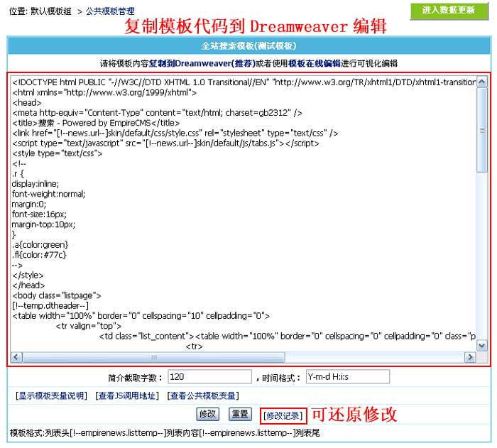

| 全站搜索模板为全站全文搜索使用的搜索模板(/e/sch)。 |
|
| 全站搜索模板制作格式 |
| 列表头 [!--empirenews.listtemp--] 列表内容 [!--empirenews.listtemp--] 列表尾 |
|
说明：第一个[!--empirenews.listtemp--]表示循环开始、第二个[!--empirenews.listtemp--]表示循环结束。 |
| 全站搜索模板支持变量说明 |
| 1、整体页面支持的变量 |
| [!--newsnav--]：所在位置导航条 | [!--news.url--]：网站地址(参数设置的站点地址) | [!--class.menu--]：一级栏目导航 |
| [!--keyboard--]：搜索关键字 | [!--num--]：总记录数 | [!--listpage--]：分页导航 |
| 支持公共模板变量 | 支持PHP代码 |
| 2、列表循环内容支持的变量 |
| [!--classid--]：栏目ID | [!--id--]：信息ID | [!--title--]：信息标题 |
| [!--titleurl--]：信息链接 | [!--newstime--]：发布时间 | [!--titlepic--]：标题图片 |
| [!--smalltext--]：简介 | [!--no.num--]：编号 | |
| 支持PHP代码 |
| 修改全站搜索模板 |
| 1、登录后台，单击“模板”菜单，选择“全站搜索模板”子菜单，进入修改全站搜索模板界面： | ||||
图片1：菜单导航 |
||||
| 2、进入“修改全站搜索模板”界面，将模板代码复制到Dreamweaver编辑，如下图： | ||||

|
||||
| 3、把全站搜索模板复制到Dreamweaver后可进行可视化编辑，如下图： | ||||
| 图1：设计视图 图2： 代码模式 |
||||
| 4、修改全站搜索模板后，复制页面的代码到后台的“全站搜索模板”文本框，然后点击“修改”即可修改完毕。 | ||||
| 5、前台预览效果可访问 /e/sch/sch.html 进行测试搜索。 |